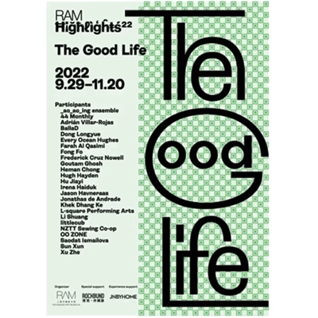

The Good Life
Date：2022/11
Catagory：Identity
Environmental graphic design for RAM
Highlights 2022: The Good Life, curated by X Zhu-Nowell.
Combining with the pictures of the participants' works, The graphics surround Huqiu Road, Beijing East Road and Yuanmingyuan Road in Shanghai's Huangpu District, echoing the city's publicity posters. The exhibition logo and signage show up on glass,
carpet and plywood.

ORI Thorns
Date：2022/11
Catagory：Identity
ORI Thorns Music Festival exhibition presents a sensory and illusory space created by the symbol "thorn" jumping out of its own field and combining it with electronic sound, bringing live devices, AR masks, physical Chokers and other accessories, as well as the surroundings. The Ciyuan exhibition can also be seen as an ongoing on-site event, with the intention of racing against the alienation of Ciyuan's meta language, attempting to stimulate the audience's new imagination of electronic sound and audio.